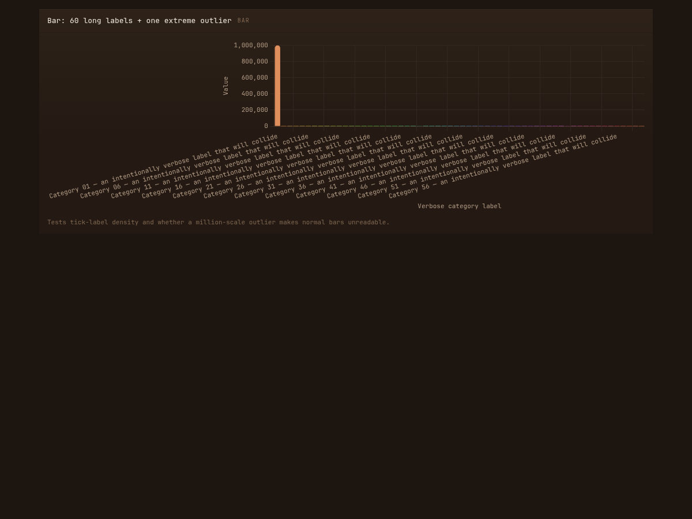
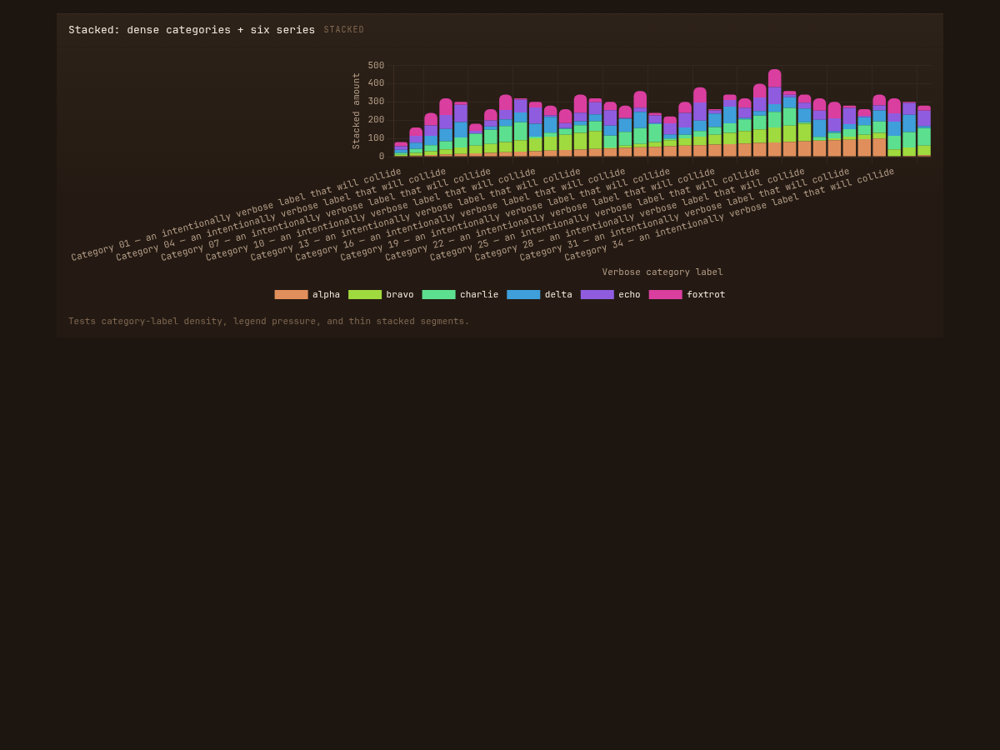
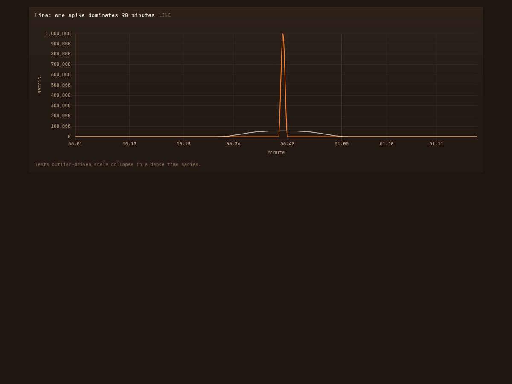
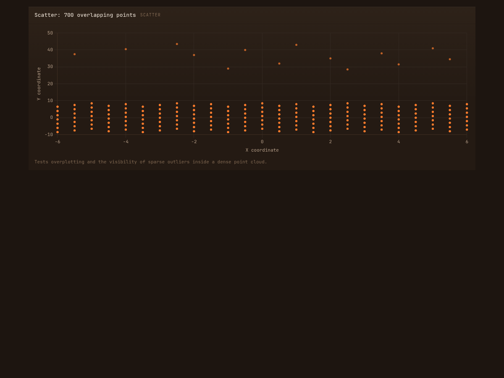
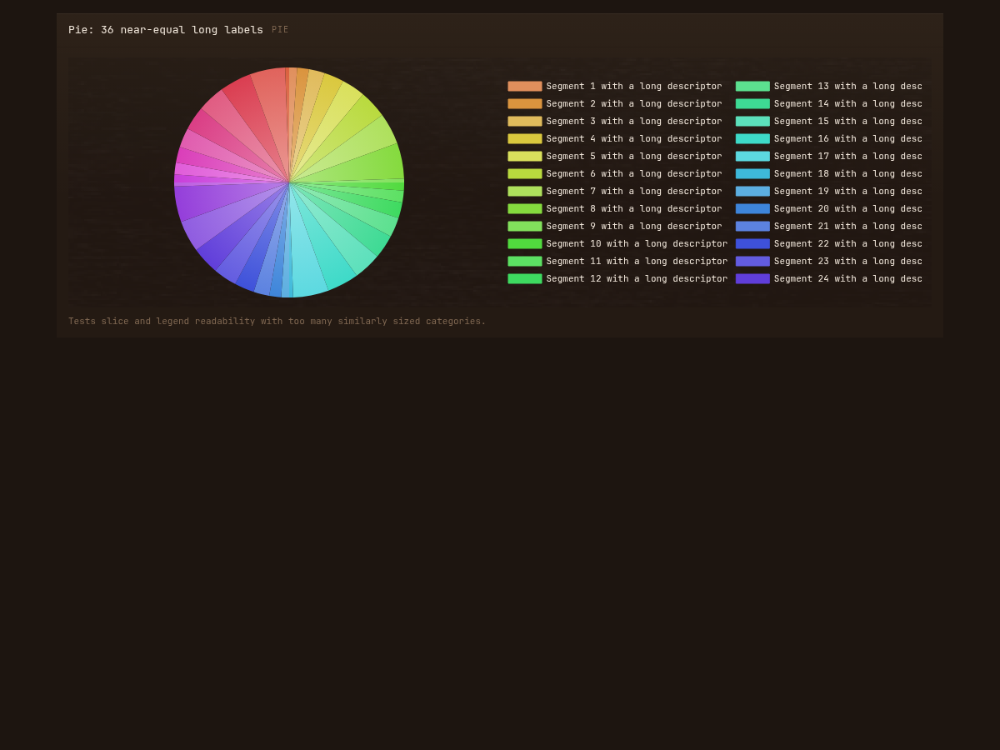
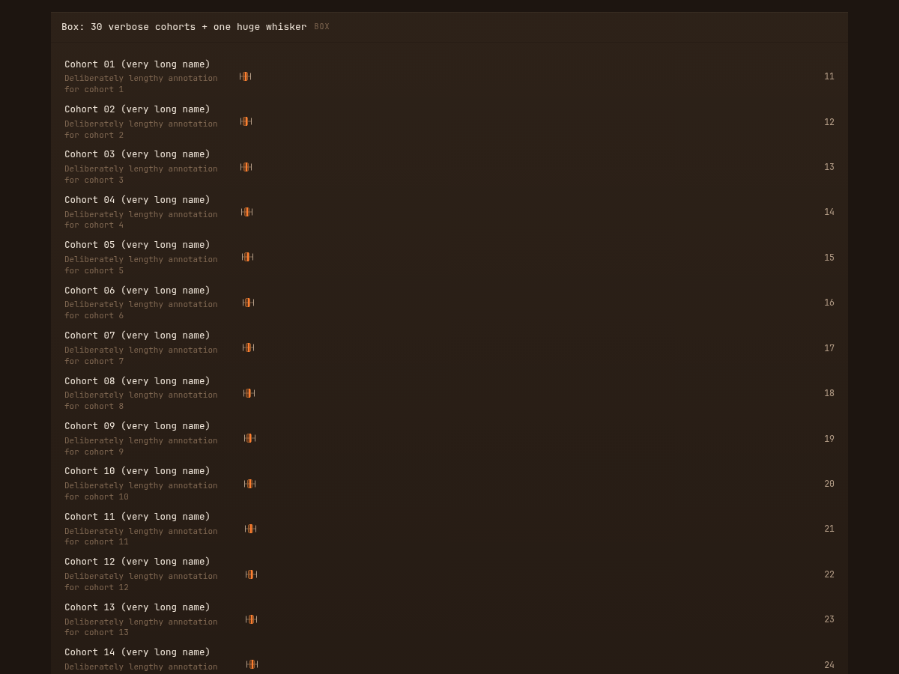
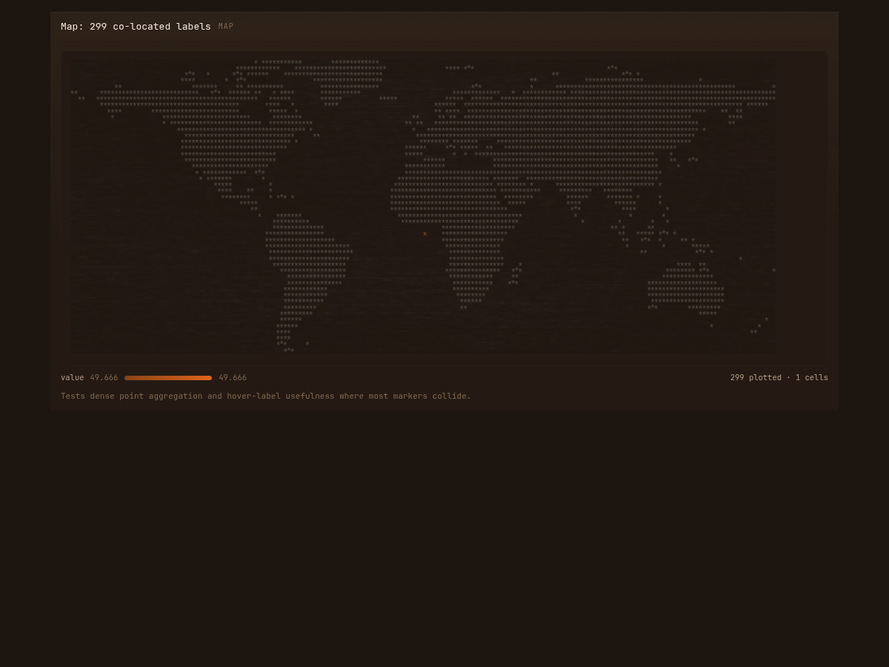
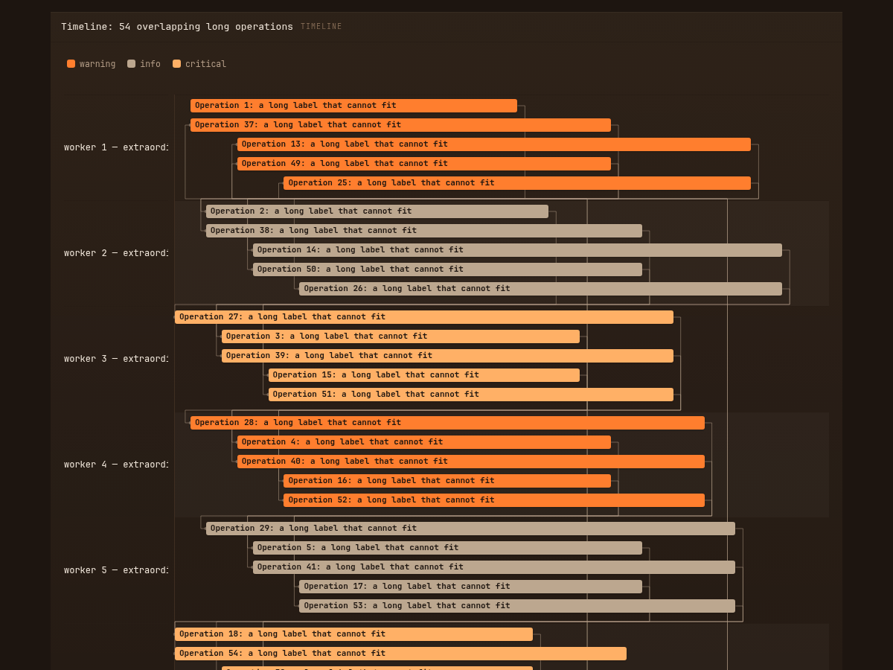
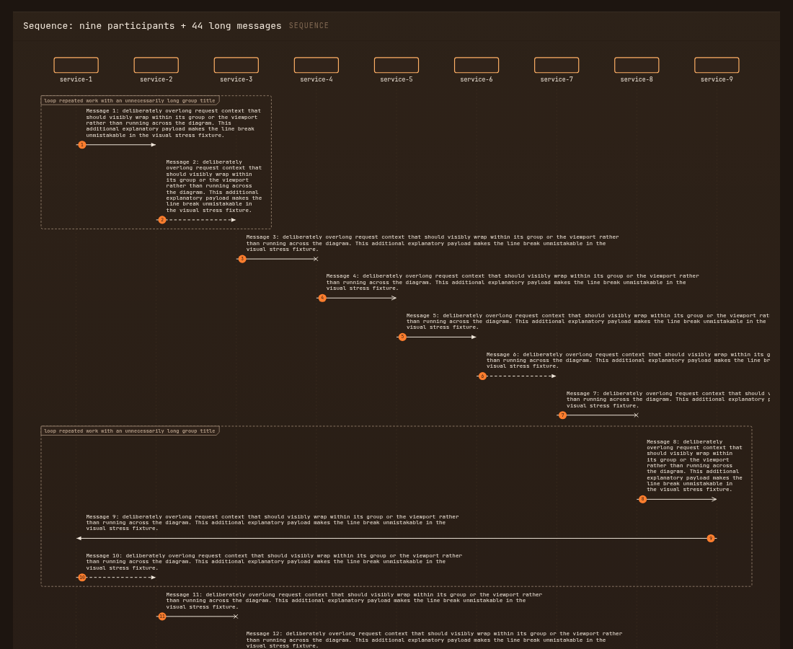

A deliberately adversarial rendering pass using 11 chart tiles at a 1280 × 900 viewport. These are visual findings, not a claim that every awkward input must be supported perfectly; the report is a shortlist for deciding which degraded states deserve product work.
Test fixtures intentionally use long labels, too many categories, overlapping marks, and extreme values. Each finding identifies what becomes unusable in the rendered output, with the screenshot as evidence. The time-axis and sequence-label improvements were verified after this report was created; the refreshed sequence screenshot below shows Bug 12's first-label clipping resolved.
Findings
Bug 1 — Bar chart category labels overlap into an unreadable band
High · The 60 diagonal labels collide horizontally and vertically; only fragments can be read. The x-axis consumes much of the panel without restoring meaning.
Candidate mitigation: density-aware thinning, shortening/truncation with hover, or switch guidance when category count exceeds the available width.

bar_overload
Bug 2 — One extreme bar erases the rest of the bar chart
High · The million-scale first category makes the other 59 bars effectively a one-pixel baseline. This makes the underlying variation impossible to inspect.
bar_overload
Bug 3 — Stacked bars preserve their legend but not their category labels
Medium · Six series remain colour-distinguishable, but the 36 long x labels collide exactly as in the bar chart. The legend competes with the axis for limited vertical space.

stacked_overload
Bug 4 — Line scale collapses normal observations around a single spike
High · A normal range around 75–125 renders as a near-flat baseline against a 1,000,000 spike. The trendline becomes visually misleading because it is also dominated by the anomaly.

line_spike
Bug 5 — Four signed area series are difficult to separate after overlap
Medium · In the crossing regions, translucent fills blend into similar brown shades. The legend identifies series, but the overlapping area is not reliably attributable to any series.
Medium · Hundreds of points share a small set of coordinates, but marks look like single dots. The reader cannot distinguish one observation from many without hovering each position.

scatter_cloud
Bug 7 — Pie legend silently cuts off after 24 of 36 segments
High · The rendered legend shows segments 1–24 only; segments 25–36 have no visible legend entry in the screenshot. The pie still contains all slices, so colour-to-category mapping is incomplete.

pie_slices
Bug 8 — Dense heatmap has clipped axes and exceeds the viewport
High · The rightmost column labels/cells are cut at the panel edge and lower rows extend beyond the screenshot. At this density it has neither an overview nor a clearly discoverable way to inspect omitted cells.
High · One huge whisker pushes the compact distributions into tiny marks near the left. Thirty verbose cohort descriptions produce an unusually tall tile, so the comparison is not visible above the fold.

box_many
Bug 10 — Co-located map data reduces 299 points to one unexplained cell
Medium · The summary says “299 plotted · 1 cells”, but the dense point cluster is represented by a single small mark. Its aggregation and labels are not visible without interaction, making this failure mode easy to miss.

map_collisions
Bug 11 — Timeline starts clipping lane names and grows beyond the viewport
High · The left gutter truncates every verbose worker name (for example, “worker 1 — extraord…”). Fifty-four heavily overlapping bars create a very tall visual with substantial content below the captured viewport.

timeline_clash
Bug 12 — Sequence diagram clips message text at both edges
Resolved locally · The message-to-arrow gap is now 16px. Labels begin inside the SVG and wrap on word boundaries to the narrower of their group frame or available viewport space; the row expands so the next arrow remains clear.

sequence_crowded — refreshed after the wrapping fix
Rendered clean enough to defer
The stacked chart’s series colours and the timeline’s bar stacking remained legible despite their density. This is not an approval of the underlying cases—only an observation that the screenshot did not reveal an additional discrete rendering failure beyond the findings above.